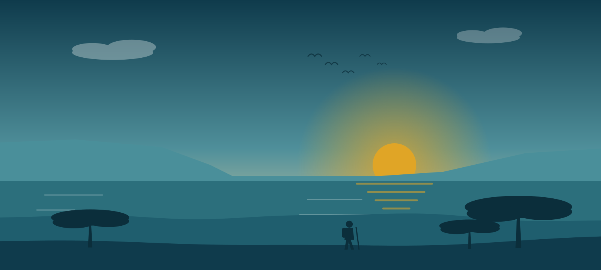

Find your next hike in Kenya
Compare trails from a morning forest loop in Nairobi to a four-day trek on Mount Kenya. Every trail lists its distance, climb, time and best season.
Three hikes, three levels
One easy, one moderate and one challenging trail show the range, from a shaded forest walk to a 4,985 metre summit.
In season this month
These trails are at their best at this time of year.
Your saved trails
These trails are stored in this browser, so you can find them again next time.
Before you hike
- Tell someone your plan. Share your route and the time you expect to be back.
- Carry enough water. Take at least 2 litres for a half-day hike and more for hot trails.
- Start early. Heat, cloud and afternoon storms build quickly in the highlands.
- Check the weather and the trail. In the rainy months, paths and gorges can become unsafe.
- Respect wildlife and park rules. Give animals space and keep food out of sight.
- Leave no trace. Stay on marked paths and carry your rubbish out.
Park fees, guide rules and access can change. Confirm the details with the park, forest authority or a local guide before you travel.
Hike with other people
Join the club for trail updates and group hikes led at a steady, friendly pace.